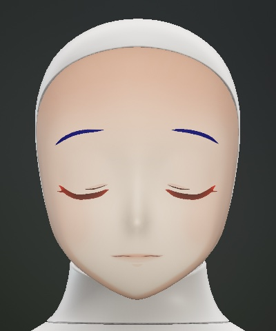
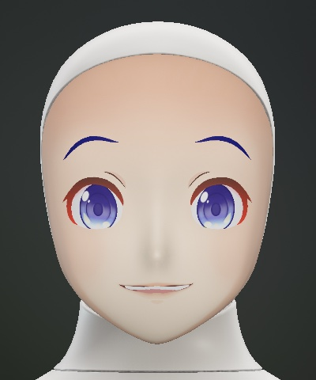

Introduction
A reading in four steps
A reading has a fixed order, but you can ask anything at the end: a good test case for grounding, reference and repair.

01 Ask
A breathing ritual, then the question
FurhatTake a slow, deep breath, and quietly think of your question.
7
23
61
02 Choose
Three numbers from a shuffled deck
Furhat7, 23 and 61. Shall I turn the cards?
03 Read
Past, present, future, then a summary
FurhatNow, where you stand today. Hmm… the Tower.

04 Ask more
Follow-up questions about the cards
UserIs it a good card?